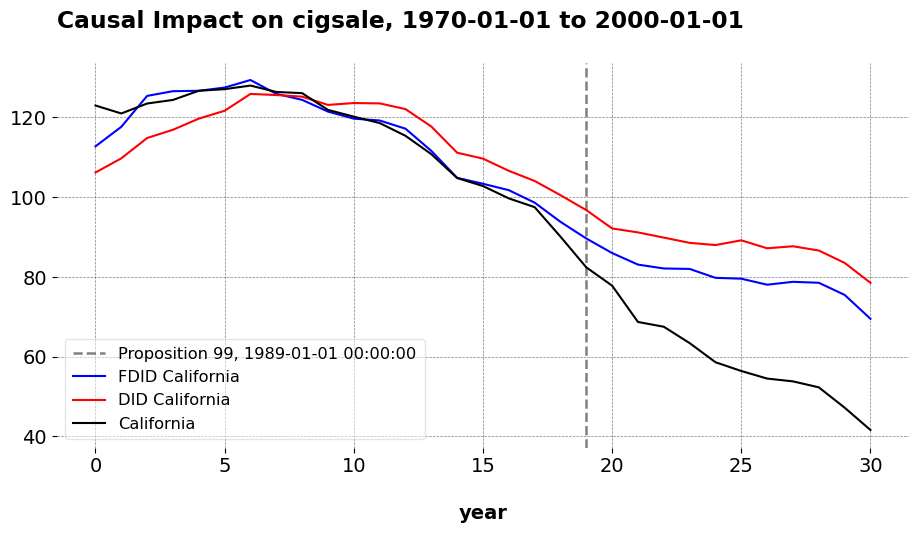

Synthetic Controls Do Not Care What Your Donors Are. So Why Do You?
Econometric Theory
Many people do not understand the math behind the methods they use. If you asked most DS employes who work with causal infernece to formally prove when parallel trends holds like Pedro Sant’Anna does, or derive the bias bound of a new SCM as Abadie might, we likely would not have very many contenders. And that’s okay, that’s natural. After all, DS is a very applied field; the langauge of proof and formal math are typically far flung concerns of your typical data scientist, and I am certainly not an exception to this rule.
However, be that as it may, it is still important to know a little about why what you are doing is effective to begin with. Why? Well, intuition can only take us so far. Yeah, you may have a library like mlsynth or geolift on you machine (or whatever you run your code in), but how do you know which tool to use, when,. and why? More importantyl, what happens when something breaks and you do not get the results you expected? What if you get something wrong? Of course, some of this is black-box-y, but in my experience anyways, lots of the issues people run into are not research issues in the sense that their question is poor or the estimator is wrong; instead, they simply misunderstand or do not know econometric theory. And this fact is usually obvious from the problems they run into. Again, this is not an issue of proof or technical depth; it is about knowing why your toolkit is effective.
Ostensibly, there are myths about SCM and its efficacy relative to DID, specifically “the myth that SCM/[Augmented] SCM don’t have assumptions like parallel trends”. I do not know who believes this myth, and if you do, direct them to me. Still, even there are not many people who confidently say “SCM has no assumptions”, this is certainly the way many researchers act in practice. And that is the point of this post.
Basic SCM
People often bring up the condition of perfect pre-intervention fit as an assumption of SCM; this has been revised substantially in recent years, but there’s another one that people do not comment on enough: the idea of the linear factor model (or latent variable model)
\[ Y_{it}(0) = \boldsymbol{\lambda}_t^\top \boldsymbol{\mu}_i + \varepsilon_{it}. \]
What does this mean? It simply means that our outcome are generated by a set of unit specific factors that are time invariant, and a set of time variant factors that are common across all units. These factors may indeed affect each unit differently… but they are common across units. SCM fundamentally is about matching our treated unit’s common factors to the common factors that we believe are embedded in the donor set (see conditons 1-6 here, such that unobservable heteorgeneity goes away and we have a good enough match between our donor pool an the target unit. In other words, this is the whole motivation for synthetic control in the very first place, the notion that we are predicting a counterfactual using control units that behave similarly, regardless of which units those happen to be.
A more flexible idea is the fine-grained potential outcomes model, which shifts the unit of analysis from groups (e.g., states, regions) to individuals within groups or regions. In this framework, groups are treated as distributions of individuals, and the goal is to estimate the ATT for the treated unit’s population. This model also allows for diverse donor types provided the aggregated donor outcomes reflect individuals who are exchangeable with the treated unit’s population. The practical implication of this is that when we apply these panel data models to real life settings, we are allowed to use different donor typs on the condition that they help us learn about the trajector of the target unit in the pre-intervention period. Because SCM does not care about what kind of donors you use, so long as they are informative donors.
Proof
Don’t believe me? Let’s replicate some results shall we. We know the classic example of Prop 99, where California’s anti-tobacco program was compared to 38 donor states. But California is a ridiculously large economy, and is basically a small country by many metrics. So why do we need to use other states as the comparison units? Why can we not use larger, aggregated control units? It turns our that we can do just that. Here, I compare California to the donor divisions of the United States, where the outcome (tobacco smoking per capita) for the donor units are averaged over time at the division level and California’s remains as is.
Here is TSSC estimator, where we adjust for an intercept.

Here is \(\ell_2\)-PDA estimator.

Here is the predictions of the FDID estimator.
Artificial Counterfactuals in Dense Settings: the \(\ell_2\) relaxer
Causal Inference
Econometrics
Data Science for Policy Analysts: A Simple Introduction to Web Scraping
Web Scraping
Python
On Clustering for Synthetic Controls
Causal Inference
Machine Learning
Applying Forward DID to Construction and Tourism Policy
Causal Inference
Machine Learning
Econometrics
Causal Inference Runs the World: Actionable Insights, Econometrics Style
Econometrics
Causal Inference
Data Science
Forward Selected Synthetic Control
Machine Learning
Econometrics
The Synthetic Regressing Control Method for Python
Causal Inference
Econometrics
Synthetic Controls With More Than One Outcome
Causal Inference
Econometrics
Synthetic Control Methods for Personalized Causal Inference
Causal Inference
Econometrics
No matching items